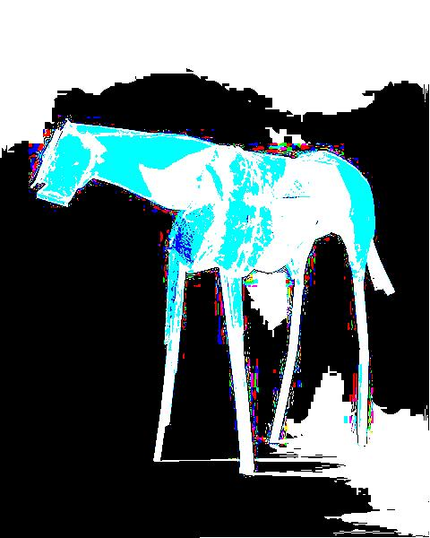

Prog 1
An overhead shot of Las Vegas before and after the following image transformations: Threshold @ 127, NoBlue, BlackAndWhite

The Great Pyramids before and after the following image transformations: Threshold @ 200, Horizontal Reflection, NoRed

Vermillion by Deborah Butterfield before and after Invert and Threshold @ 100